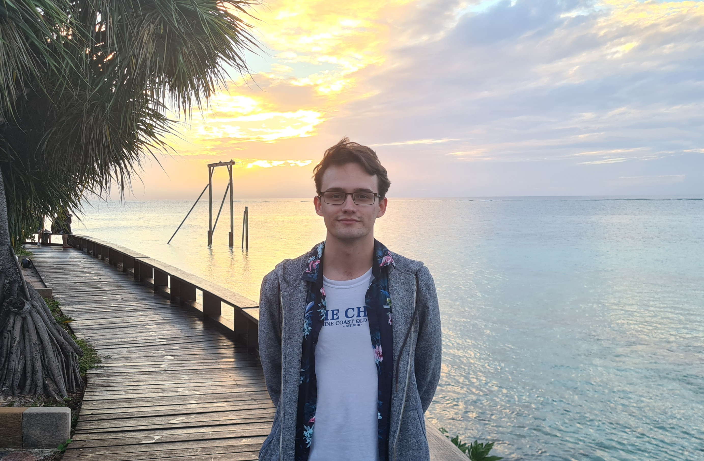

I am an Australian graduate student in mathematics. My CV is here. My GitHub is here.

(Heron Island, 2021)
My advisors are Masoud Kamgarpour and Ole Warnaar.
My masters thesis is about the Arithmetic Geometry of Character Varieties.
I wrote CharacterVarieties.jl for Julia to calculate polynomials describing the geometry of character varieties.
I created a visual description of my masters project about the Topology of Representation Spaces via Arithmetic.
My undergraduate thesis was about Hecke Algebras and Gelfand Pairs in Representation Theory.
I tutored at UQ for the following courses:
You may have met me at the following:
67th Annual
Meeting of the Australian Mathematical Society, Brisbane, Australia
[1]
University
of Glasgow, Algebra and Number Theory Seminar, Glasgow, Scotland [1]
Categorified
Enumerative Geometry and Representation Theory, Lausanne,
Switzerland [1]
66th Annual
Meeting of the Australian Mathematical Society, Sydney, Australia [1]
AMSI
Winter School, Brisbane, Australia [1]
UQ Representation Theory Day, Brisbane, Australia [1]
Heron Island Workshop on
Geometry and Representation Theory, Heron Island, Australia [1] [2]
{kind=link}
![[1]](files/23_austms.jpg){kind=link}
![[1]](files/23_Glasgow.png){kind=link}
![[1]](files/23_EPFL.png){kind=link}
![[1]](files/22_austms.jpg){kind=link}
![[1]](files/22_amsi.png){kind=link}
![[1]](files/21_repday.png){kind=link}
![[1]](files/21_heron.png){kind=link}
![[2]](files/21_me_heron.png){kind=link}